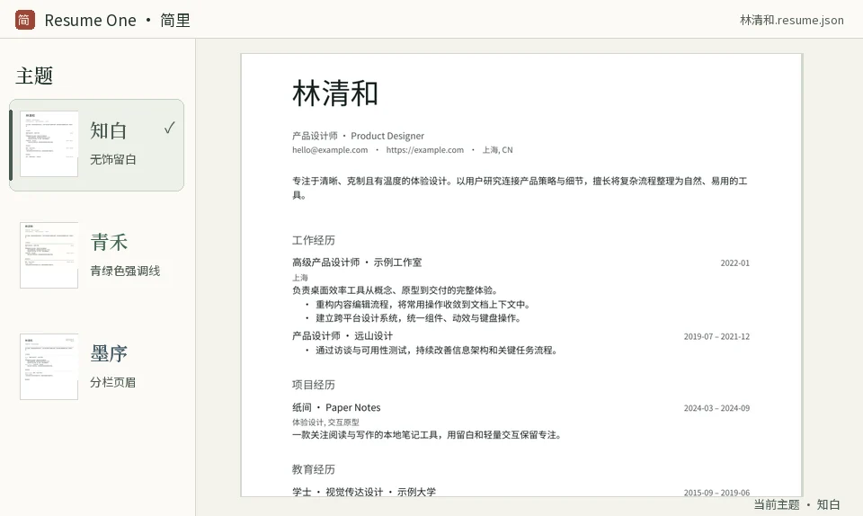

林清和
产品设计师 · Product Designer
hello@example.comhttps://example.com上海, CN
专注于清晰、克制且有温度的体验设计。以用户研究连接产品策略与细节，擅长将复杂流程整理为自然、易用的工具。
工作经历
负责桌面效率工具从概念、原型到交付的完整体验。
技能
设计方法
用户研究 · 信息架构 · 交互设计
按 ⌘ + / 或 Ctrl + / 在源码与预览间切换。左侧主题栏随视图收放，右侧模块栏留在原位。
把鼠标移到工作经历上。表单淡入，移开后回到干净纸面。也可以点击工作经历打开表单。
产品设计师 · Product Designer
hello@example.comhttps://example.com上海, CN
专注于清晰、克制且有温度的体验设计。以用户研究连接产品策略与细节，擅长将复杂流程整理为自然、易用的工具。
负责桌面效率工具从概念、原型到交付的完整体验。
设计方法
用户研究 · 信息架构 · 交互设计
把鼠标移到主题上，简里用当前简历试穿。移开恢复，点击才应用。内容、字体和配色可以各自调整。

两个在线目录来自同一个主题仓库。在「管理」可添加多个 GitHub 来源，并为每个来源设置展示名称。
浏览主题仓库用标准 JSON 管理内容，投递时选合适的文件格式。
用 CLI 校验、读取、打补丁和导出，接入脚本或 Agent。补丁可预演，也可用文件版本检查防止覆盖后来修改的内容。
resume-one validate --file "$PWD/resume.json" --json
resume-one export --file "$PWD/resume.json" --format md --out "$PWD/resume.md"下载对应平台的 ZIP，解压后打开简里。压缩包内附 CLI、主题迁移工具和使用手册。
在 Mac 上，从苹果菜单打开「关于本机」，查看「芯片」或「处理器」。在 Windows 上，打开「设置 → 系统 → 关于」，查看「系统类型」，选择 x64 或 ARM64。
由你决定。可以用普通本地目录，也可以选择 iCloud Drive 或 OneDrive 文件夹，由对应服务同步。应用内预览与导出都在本机完成。
可以。在「外观」里悬停试用本机字体和颜色，确认后保存为个人设置。也可导入字体或从屏幕取色，简历 JSON 保持原样。
原版纸面由上游模板渲染。可以用 JSON 编辑器和右侧模块栏更新内容。声明式主题还支持在纸面悬停唤出编辑表单。